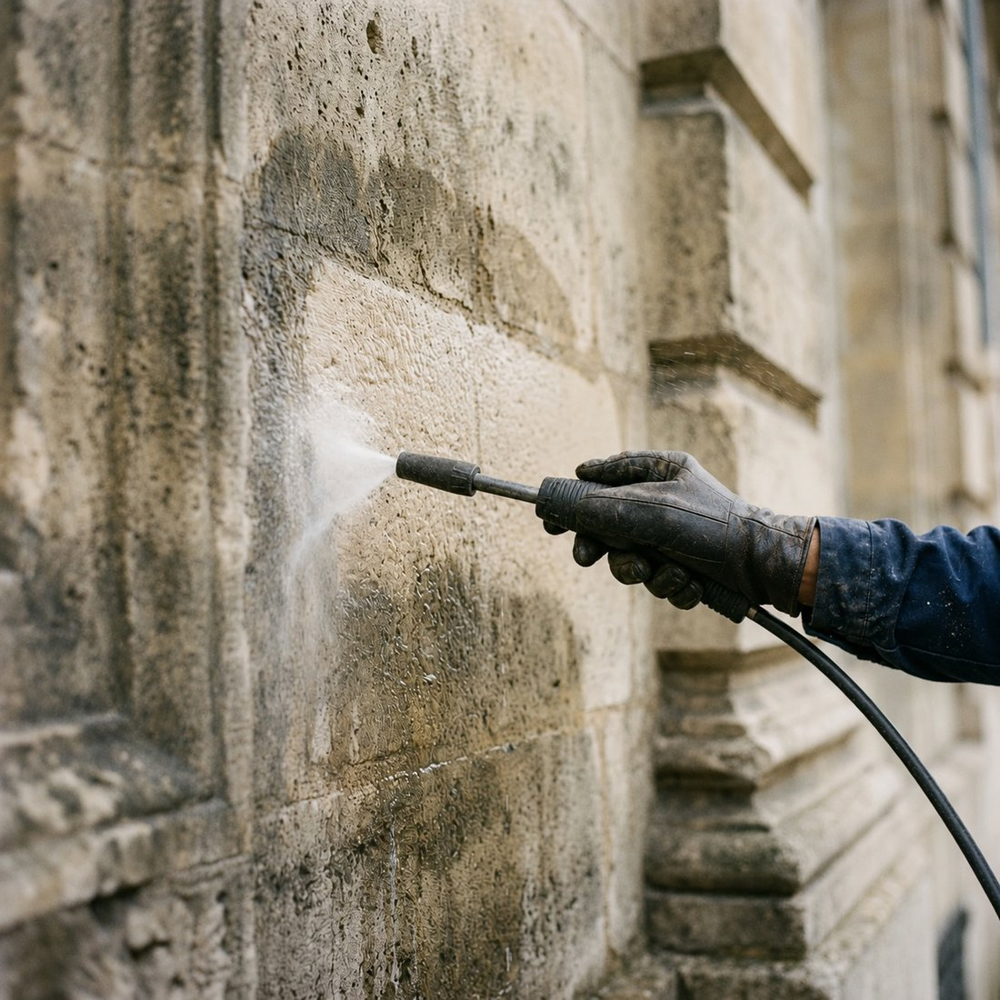
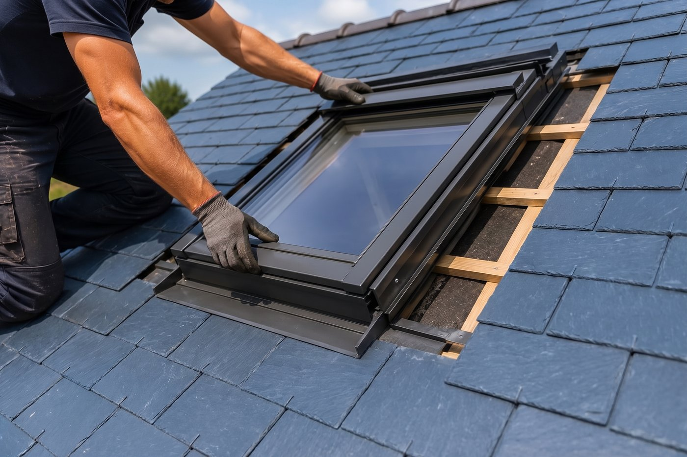
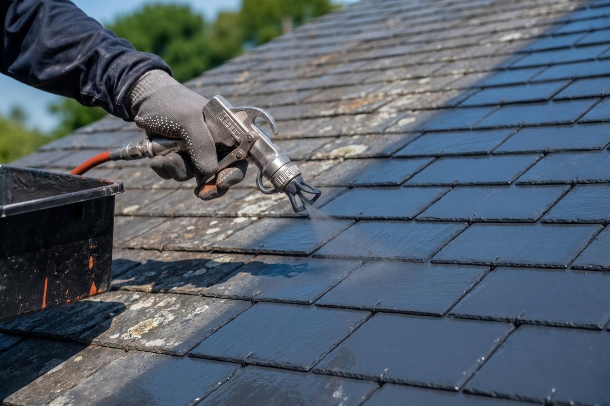
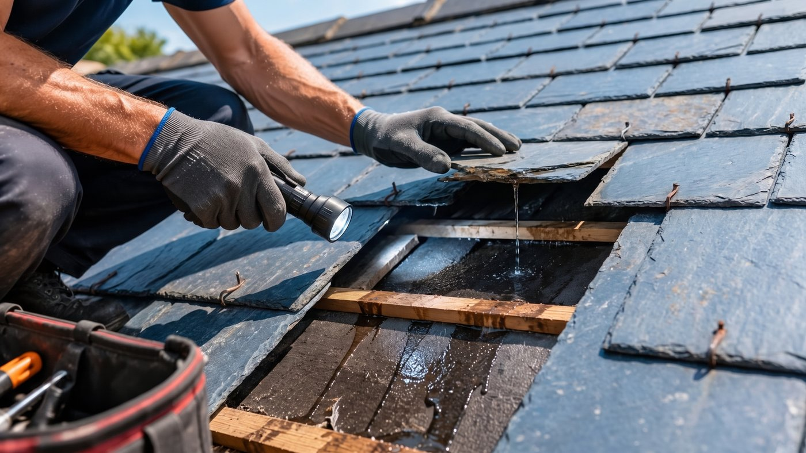

Fissures reprises, enduit refait, hydrofuge appliqué : une façade assainie et protégée pour de longues années.
Un ravalement protège avant d'embellir. Nous commençons par un diagnostic complet, fissures, cloques, enduit sonnant creux et remontées d'humidité, puis nous reprenons les désordres avant toute finition.
Le bâti du Gironde mêle pierre calcaire, moellon et enduits plus récents : chacun demande un traitement différent, et un enduit trop étanche sur de la pierre ancienne emprisonne l'humidité. A toit la couverture réalise le nettoyage, la reprise des fissures, l'enduit taloché, gratté ou à la chaux, et la protection hydrofuge, à Castres-Gironde et dans tout le secteur.

Nous venons sur place évaluer les travaux, prendre les mesures et répondre à vos questions.
Un devis clair poste par poste, avec les matériaux, la durée du chantier et un prix ferme.
Protection des abords, préparation puis réalisation soignée des travaux.
Contrôle avec vous, reprises éventuelles et nettoyage complet du chantier.
Nous ravalons les façades de Castres-Gironde, Cadaujac, Beautiran, Bordeaux, Saint-Médard-d'Eyrans, Portets, Ayguemorte-les-Graves, Isle-Saint-Georges, La Brède, Léognan, Cestas, Villenave-d'Ornon, Gradignan, Langon et Mérignac. Votre commune n'apparaît pas dans la liste ? Appelez-nous, nous vous dirons rapidement si nous intervenons chez vous.
Oui, dès que l'aspect extérieur change. Une déclaration préalable en mairie suffit dans la plupart des cas, et nous vous indiquons les teintes autorisées.
Le plus souvent entre 40 et 100 € par m² selon l'état du support, l'ampleur des reprises et la finition. Une visite sur place permet seule un prix ferme.
Oui, mais uniquement à la chaux, qui laisse respirer le mur. Un enduit ciment sur de la pierre calcaire ancienne piège l'humidité et provoque des désordres.

Pose et remplacement de fenêtres de toit Velux pour apporter plus de lumière et améliorer votre confort.
En savoir plus
Redonnez de l'éclat à votre toiture grâce à une peinture professionnelle résistante aux intempéries et aux UV.
En savoir plus
Inspection, diagnostic précis et travaux de remise à neuf pour prolonger la vie de votre toit et assurer son étanchéité.
En savoir plusA toit la couverture se déplace gratuitement pour évaluer vos travaux et vous remettre un devis clair, sans engagement.